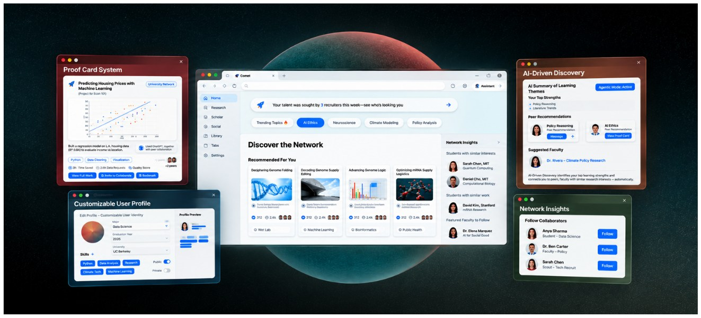
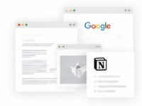
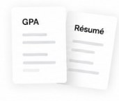
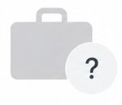
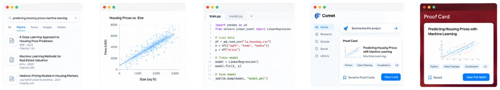
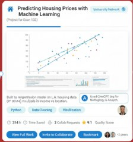
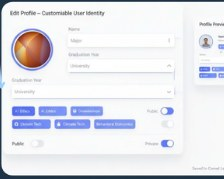
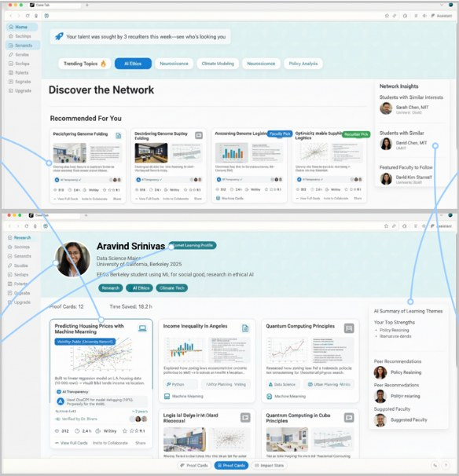
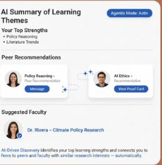
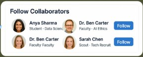

Comet — Academic Social Network
Concept design for a social layer within Perplexity’s Comet browser that turns everyday academic activity into a self-updating portfolio of verified work. Led creative direction and UI/UX for an inter-campus competition project that placed second overall.

Problem
Students spend billions of hours researching, analyzing, building, and learning, but most of that work disappears into browser tabs, assignments, and folders once it’s finished.
At the same time, students attend university largely to prepare for their careers, while employers struggle to understand what graduates can actually do.
There is a gap between what students do and what recruiters see.

- The gap


Solution
Instead of asking students to manually build another portfolio, we saw an opportunity in something they already use every day: the browser.
Comet sits directly where research and academic work happen. That makes it uniquely positioned to capture the process—not just the final claim.

Proof Card System

Auto-captured “cards” showing the technical details of any research project you have done using the Comet browser
Customizable User Profile

Choose from an automated list which academic work to share to your public profile and gain traction

AI-Driven Discovery

Students, faculty, and employers connect via visible, verified work
Network Insights

Stay in sync/follow your favorite builders, mentors, and scouts for updates